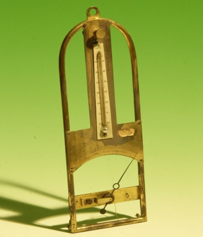

Igrometro a capello

Scuola di provenienza: Liceo Classico "P. Colletta", Avellino
Settore: Meccanica
Costruttori: Secheresse Flumulite
Materiali: Ottone
Accessori: Nessuno
Stato di conservazione: Buono
Descrizione: È uno strumento suscettibile di una sufficiente precisione; esso è fondato sull´aumento di lunghezza provato dai capelli sotto l´azione dell´umidità. L´apparecchio è formato da un telaio in ottone, alla parete superiore del quale si trova una pinzetta, destinata a tenere un´estremità del capello. L´altra estremità di questo è fissata, e parzialmente avvolta, alla gola di una piccola carrucola assai leggera e mobile. Un filo di seta avvolto in senso opposto al capello e fissato ad una seconda gola della carrucola porta alla sua estremità il piccolo peso di due o tre decigrammi, destinato a tenere il capello costantemente teso. All´asse della puleggia è fissato, per il suo centro di gravità, un indice che può scorrere su di un quadrante graduato. Dietro queste disposizioni si capisce che, se a causa di un aumento di umidità, il capello viene ad allungarsi, l´indice si muove verso i valori più bassi della scala graduata; la diminuzione dell´umidità nell´ambiente darà luogo ad un movimento inverso. I capelli devono subire prima di essere adoperati, una preventiva preparazione, la quale ha o scopo di liberarli dalla materia grassa di cui sono abitualmente coperti. A tale scopo si può, come usava l´inventore dello strumento, tenerli immersi per qualche tempo in una dissoluzione di bicarbonato di soda cristallizzato, lavarli in seguito con molta acqua e farli asciugare. Sembra però preferibile, onde non esporsi ad un´ alterazione permanente nella struttura dei capelli, di lasciarli per ventiquattro ore nell´etere solforico.